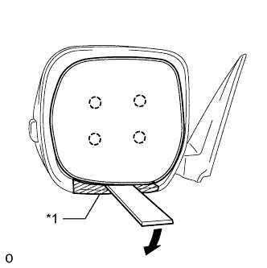
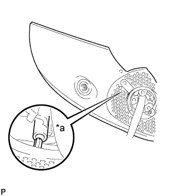

НАРУЖНОЕ ЗЕРКАЛО ЗАДНЕГО ВИДА > РАЗБОРКА |
| 1. СНИМИТЕ СТЕКЛО НАРУЖНОГО ЗЕРКАЛА ЗАДНЕГО ВИДА |
|  |
Надавите на верхнюю часть зеркала и наклоните его.
С помощью съемника молдингов расцепите 4 захвата и отсоедините стекло наружного зеркала заднего вида от корпуса зеркала.
| *1 | Защитная клейкая лента |
 |
Для моделей с обогревателем зеркала:
Отсоедините 2 разъема и снимите стекло зеркала.
| 2. СНИМИТЕ КРЫШКУ ЛЕВОГО НАРУЖНОГО ЗЕРКАЛА |
 |
 |
С помощью 2 отверток освободите 2 захвата.
| *1 | Защитная клейкая лента |
Вставьте отвертку в прорезь, как показано на рисунке, и нажмите на корпус наружного зеркала, чтобы создать пространство между корпусом и крышкой наружного зеркала.

| *1 | Защитная клейкая лента | *2 | Ребро |
| *a | Внутренняя сторона крышки наружного зеркала | - | - |
 |
Вставьте съемник молдингов в созданное пространство между корпусом и крышкой наружного зеркала.
| *1 | Защитная клейкая лента |
 |
Сдвиньте съемник молдингов вниз, как показано на рисунке, чтобы освободить 2 захвата.
| Область | Заданные условия |
| a | 40,0 мм (1,57 дюйма) |
Снимите съемник молдингов.
 |
Вставьте съемник молдингов между корпусом и крышкой наружного зеркала, как показано на рисунке, и освободите захват.
| *1 | Защитная клейкая лента |
 |
С помощью отвертки отцепите захват.
| *1 | Защитная клейкая лента |
 |
Освободите 2 захвата и снимите крышку наружного зеркала.
| 3. СНИМИТЕ ЛЕВЫЙ ПОВТОРИТЕЛЬ УКАЗАТЕЛЯ ПОВОРОТА В СБОРЕ |
Выверните 3 винта и снимите лампу.
Отсоедините разъем.
| 4. СНИМИТЕ МЕХАНИЗМ ОТВОДА ЛЕВОГО НАРУЖНОГО ЗЕРКАЛА |
Снимите прокладку левого наружного зеркала заднего вида.
Разрежьте жгут проводов в месте, показанном на рисунке.
| *a | Отрезать здесь |
Снимите ленту и отсоедините зажим.
| *1 | Лента |
| *2 | Хомут |
Выверните винт, освободите 5 захватов и снимите прокладку левого наружного зеркала заднего вида.
Снимите нижнюю крышку зеркала.
 |
Наклейте защитную клейкую ленту вокруг нижней крышки зеркала.
| *1 | Защитная клейкая лента |
 |
С помощью отвертки отцепите захват.
| *1 | Защитная клейкая лента |
С помощью отвертки отцепите захват.
| *1 | Защитная клейкая лента |
 |
С помощью отвертки освободите захват, чтобы создать пространство между нижней крышкой и корпусом зеркала, как показано на рисунке.
| *1 | Защитная клейкая лента |
 |
Вставьте отвертку, как показано на рисунке.
| *1 | Защитная клейкая лента |
 |
Освободите захват, чтобы создать пространство между нижней крышкой и основанием крышки зеркала, как показано на рисунке.
| *1 | Защитная клейкая лента |
 |
Перемещая нижнюю крышку зеркала вперед и назад в направлениях, показанных на рисунке стрелками, освободите 3 захвата и снимите нижнюю крышку зеркала.
Выверните 3 винта с помощью торцевого ключа с головкой "TORX" T25.
 |
Для моделей с монитором бокового обзора:
Отсоедините разъем от фиксатора провода.
Отсоедините разъем.
| *1 | Защитная клейкая лента |
 |
Выверните 5 винтов и снимите корпус наружного зеркала.
|  |
Отцепите захват и снимите корпус крышки.
| *a | А |
Снимите привод в сборе.
Сдвиньте крышку, как показано на рисунке, и отсоедините разъем.
Вытяните жгут проводов в направлении, указанном стрелкой на рисунке.
Выверните 3 винта и снимите привод в сборе.
Снимите зажим.
Отверткой с тонким лезвием и обернутым клейкой лентой концом освободите два захвата и отсоедините разъем.
Для моделей с монитором бокового обзора:
Отцепите захват и снимите фиксатор провода.
Снимите пружину опоры.
 |
Выверните 2 винта, а затем освободите 6 захватов и снимите 2 пружины опоры.
| 5. СНИМИТЕ БОКОВУЮ ТЕЛЕКАМЕРУ В СБОРЕ (для моделей с монитором бокового обзора) |
Снимите боковую телекамеру в сборе (Нажмите здесь).